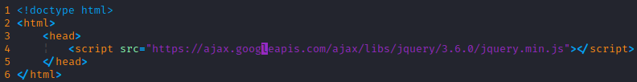
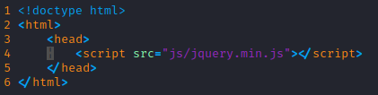
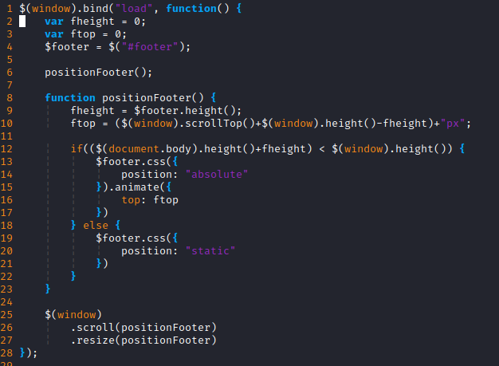

Introdução
jQuery é uma biblioteca javascript que foi criada por John Resig e é disponibilizada de maneira livre (open-source/Licença MIT). Assim, como dito por seu próprio criador: "O foco da biblioteca jQuery é a simplicidade. Por que submeter os desenvolvedores ao martírio de escrever longos e complexos códigos para criar simples efeitos?". (SILVA, 2010)
Desenvolvimento
"O que torna o estudo e entendimento dos conceitos básicos de jQuery mais fascinantes ainda é o fato de que você não precisa ser um profundo conhecedor de JavaScript [..]", (SILVA, 2010).
O trecho posto é facilmente alinhado com a construção da validação do formulário presente neste website. Onde, de maneira prática e rápida, foi utilizado um Plugin ("Validation") para uma extensão de funcionalidade do jQuery de maneira a se misturar com seus outros metodos já bem definidos.
Já como uma caracteristica de facilidade, para o carregamento do jQuery podemos simplesmente incorporar através da tag script o script javascript de maneira externa, que nesse caso funciona através da API do Google (AJAX).
Ainda há a possibilidade de carregamento do script compactado do JQuery de maneira direta através do próprio sistema de arquivos:
O jQuery é muito útil para manutenção de efeitos visuais na Web. Como apresentado no exemplo abaixo, onde o footer é devidamente alinhado com uma animação de movimento.
Conclusão
Portanto, concluimos que o jQuery, juntamente com os diversos Plugins presentes na comunidade, é um grande pilar da construção de sites, seja por sua facilidade, acessibilidade ou curva de aprendizagem.